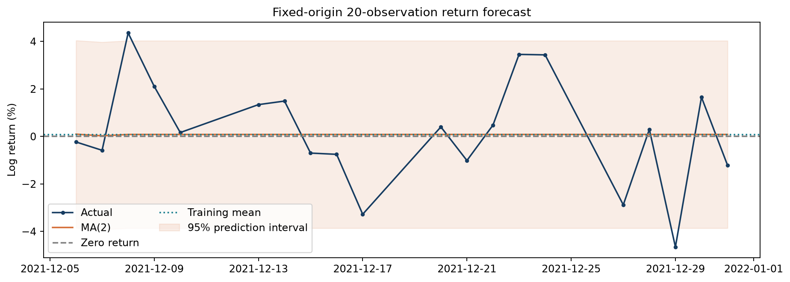
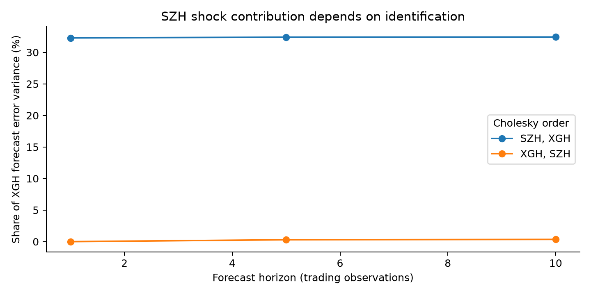
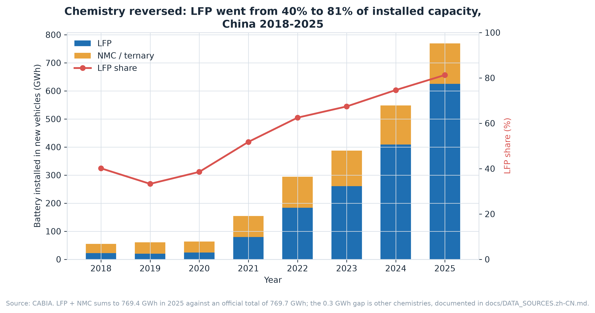
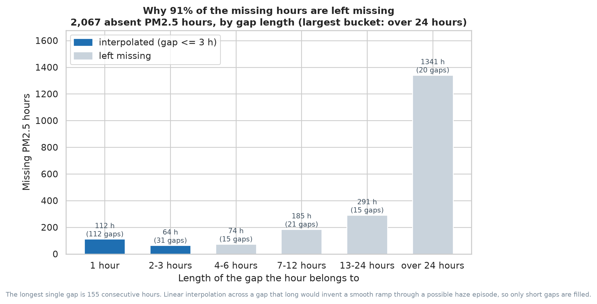
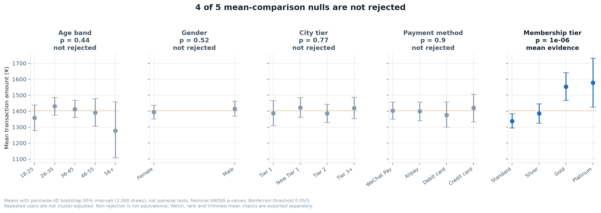
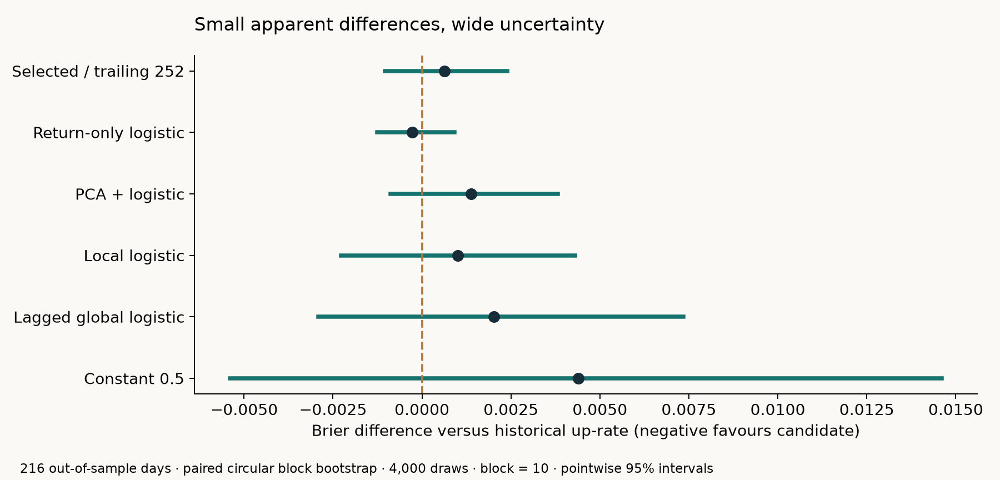

Nine projects, in numerical order.
Methodological & Reproducibility Verification Matrix (01–09) Click to toggle
| Project | Sample & Granularity | Core Methodology | Key Finding / Diagnostic | Verification Scope |
|---|---|---|---|---|
| 01 · Equity | Daily equity series · 20-day fixed holdout | ARMA/ARIMA · BIC · Ljung–Box · ARCH-LM | 0.29% RMSE edge fails residual whiteness & homoscedasticity (p = 4e-09) | 11 tables · 252 values at rtol=1e-6 |
| 02 · Linkages | Paired Shanghai–HK index series | VAR(7) / VECM · Johansen · Cholesky FEVD | 10-step FEVD flips from 32.4% to 0.35% when Cholesky order reverses | 8 tables · 334 values at rtol=1e-6 |
| 03 · NEV | 2015–2025 macro series · 7 tables | Denominator reconciliation · Provenance audit | 47.9% share includes exports; 2025 NEA charging scope break isolated | 16 bilingual figures · field provenance check |
| 04 · Bike | 17,379 hourly & 731 daily rows | Date-format normalisation · Offline Plotly | String join matches 0/731 days; parsed timestamps reconcile with 0 diff | 4 standalone offline HTML charts |
| 05 · PM2.5 | 43,824 hourly rows · 2,067 missing | Run-length gap audit · Rank vs. linear corr | 155h max gap (91% unfilled under ≤3h rule); TEMP Pearson/Spearman sign flip | 7 figures · gap-free hourly index assert |
| 06 · Consumer | 8,020 raw → 8,000 deduplicated rows | ANOVA · Welch-Yuen trimmed · User-cluster bootstrap | 4/5 segment nulls not rejected; 2,372 repeated users require cluster caution | 7 figures · 11 inference tests · 2,000 cluster draws |
| 07 · Workforce | 50,000 ordered + 5,000 random ops | Java 17 AVL tree + Department hierarchy | Logarithmic height & exact membership bijection across rotations/deletes | Maven JUnit 5 + TreeMap oracle + verify() |
| 08 · Job NLP | 21,663 postings · 2,757 SkillSpan sents | Employer-disjoint TF-IDF/SVM · BIO LR · CNN/MiniLM | Fusion Macro-F1 (0.7348) vs. Text (0.7406): Δ = −0.0059 [−0.0176, +0.0070] | SHA-256 manifest · 22,213 source refs |
| 09 · Temporal ML | 536 public return observations · 216 test days | Purged rolling evaluation · train-only scaling · paired block bootstrap | Development selects the prior; local logistic ΔBrier +0.001006 [−0.002279, +0.004296] | 7 temporal tests · 6 reproduced tables · 24 interval checks |

01Equity Time-Series Forecasting
statsmodels · ARMA/ARIMA · fixed-origin holdout · 252 values verified per run
Negative resultTraining-only BIC selects MA(2). It beats a zero-return forecast by 0.29% of RMSE on an untouched 20-day holdout — while Ljung–Box rejects residual adequacy at lag 20 and ARCH-LM rejects constant variance (p = 4e-09).
Model selection uses training data only. Fit, residual adequacy and holdout performance are reported separately, against fixed benchmarks.
Decision relevance. Keep the zero-return benchmark: this small advantage on one window does not justify deploying a trading model. Wider time-based validation and transaction costs remain necessary.

02Shanghai–Hong Kong Market Linkages
VAR / VECM · Johansen · Granger · 334 values verified per run
Negative resultA Shanghai shock appears to explain 32.4% of Hong Kong's 10-step forecast-error variance — reverse the Cholesky ordering and the same quantity becomes 0.35%. Same data, same model, same sample; only the identifying assumption changed.
VAR(7) also loses to a zero-return benchmark on MAE in both markets, and neither Granger direction is significant at 5%. Johansen selects rank 2 stably, yet every fitted VECM rejects residual whiteness — so no long-run equilibrium claim is made and no VECM forecast is deployed on the back of it.
Decision relevance. Treat shock attribution as sensitive to identification assumptions. It is insufficient evidence for a directional hedging rule or a causal claim about either market.

03China's New Energy Vehicle Transition, 2015–2025
pandas · matplotlib · 7 compiled tables · 16 figures, bilingual
Business question. What can national industry statistics establish about market transition, and what additional evidence would a charging-investment assessment require?
In 2025, NEVs accounted for 47.9% of CAAM's all-vehicle sales, including exports. The important analytical distinctions are the denominators: domestic sales, registrations, fleet stock and battery-chemistry subtotals answer different questions.
A source audit records publication dates and evidence levels, corrects the 2021 PHEV sales input, and flags the 2025 charging-statistics break. Historical observations still awaiting verification remain labelled. The carbon calculation is an illustrative scenario, not measured emissions savings.
Decision relevance. Charging investment needs location, utilization and power data. National connector counts and a series with a reporting break cannot alone establish where capacity is scarce.
Research brief Dashboard Battery chemistry Source audit Code & data


04Bike-Sharing Demand: Interactive Visualisation
Plotly · standalone offline charts · 17,379 hourly observations
Data-quality findingThe two files in the UCI Bike Sharing Dataset store dates as
2011/1/1 and 2011-01-01, so the obvious join between them
matches 0 of 731 days — and any reconciliation check built on it passes while
comparing nothing to nothing. Parsed properly, the files agree exactly.
Four interactive figures, each labelling what every visual channel encodes. The density contour is a count of observations; ride volume is carried only by marker size on a separate layer, so the two can never be read off the same channel.
Decision relevance. Reconcile hourly and daily totals before using demand patterns to inform fleet planning. These historical aggregates support exploration; station-level rebalancing requires station availability and service-cost data.

05Beijing PM2.5, 2010–2014
Seaborn · 43,824 hourly observations · 7 figures
Method correction48.5% of observed hourly PM2.5 readings exceed 75 µg/m³, a daily-standard reference value, not an hourly compliance limit. Spearman ρ is −0.360 for cumulated wind speed and +0.011 for temperature. Median PM2.5 is 6.3× higher in the lowest cumulated-wind-speed decile than in the highest.
Temperature's Pearson r (−0.091) and Spearman ρ (+0.011) have different signs. This alone does not establish non-monotonicity; conditional medians offer an additional descriptive view. Separately, 1,341 of the 2,067 missing hours sit inside gaps longer than a day — the longest is 155 consecutive hours. A short-gap policy audit leaves 91% unfilled. The headline figures and correlations use only original observations, excluding all 2,067 missing hours.
Transferable analytical skills. Auditing missingness, distinguishing measurement periods and communicating observational uncertainty. This environmental study does not validate a business intervention or identify the effects of changing emissions or schedules.



06Consumer Transactions: Testing Segmentation Claims
Matplotlib · 8,000 transactions · bootstrap CIs · ANOVA · permutation null
Exploratory comparisonsBusiness question. Does recorded amount per transaction justify prioritising a demographic segment or a membership offer? This metric does not measure margin, conversion or customer lifetime value.
Four of five groupings have non-significant nominal ANOVA comparisons. Income has a small sample correlation with amount (−0.010). Repeated user IDs limit independent-row tests and intervals; these diagnostics do not establish equality or absence of information.
Membership groups differ descriptively, but assignment rules and causal direction are unknown. All twelve monthly totals fall within pointwise permutation ranges; this is not a joint seasonal test and cannot establish absence of seasonality. The input contains 8,020 rows; 20 exact duplicates are removed, leaving 8,000 transactions.
Original collection and synthetic status are unknown; real customer data are not established. These are exploratory tests. Repeated user IDs create dependence that the original tests and figure intervals do not adjust for. A separate 2,000-draw user-cluster bootstrap now preserves all transactions per sampled user; its pointwise intervals remain exploratory and non-causal.
Decision relevance. Avoid reallocating marketing spend from these demographic rankings alone. A next step is a randomized offer test with incremental contribution margin as the primary outcome; no such experiment has been conducted here.
Research brief Segmentation audit Correlation intervals Trend vs noise Code


07Workforce System in Java
Java 17 · department tree · employee search index · invariant testing
Information systemsA department tree and an employee search index must describe the same people. Transfers, deletion, membership and ordering are checked against explicit invariants.
Immutable employee records, integer salary cents and reference-model tests make state changes inspectable. Ordered inputs and deletion edge cases test behaviour beyond a single random workload.
Decision relevance. Consistent department membership supports reliable headcount reporting. This in-memory teaching system demonstrates core invariants; production use would also require persistence, access control and audit history.
Architecture brief & illustrated scenarios English README 中文 README Code & tests

NLP reading route · reproducible evaluation
08Does the Skill Signal Help?
Job-posting NLP · SkillSpan · 21,663 postings · 20 classes · employer-disjoint split
Business question. Does adding skill-lexicon features improve broad-category routing enough to justify the added feature pipeline? Offline category accuracy and useful requirement extraction are evaluated separately.
Adding a Skill + Knowledge lexicon does not clear the improvement criterion: test Macro-F1 is 0.7406 for text and 0.7348 for equal-weight fusion.
Text-only, lexicon-only and combined features are evaluated with an employer-disjoint split. Saved predictions support metric checks. Classification and exact-span extraction are separate tasks; the brief explains uncertainty and differences from the original paper.
Decision relevance. Retain the text baseline as the reference for further routing evaluation; assess extracted requirements directly before using them in a skills profile. These offline results do not establish production readiness, recruiter time savings or hiring outcomes.
Original coursework independently completed by 闫佳玉 / Jiayu Yan. Portfolio refinements used AI assistance.

Lab 6 research extension · temporal machine learning
09When the Baseline Wins
scikit-learn · purged rolling evaluation · ablations · block-bootstrap intervals
Negative result · open licensed dataDevelopment-only model selection chooses the historical up-rate. On five subsequent test blocks its Brier score is 0.245605. Local logistic regression changes loss by +0.001006, with a 95% interval of [−0.002279, +0.004296]; lower is better.
A new implementation on CC BY 4.0 UCI market returns separates model selection, rolling refitting and exploratory ablations. A return-only model's small apparent gain also has an interval crossing zero. Seven tests check time alignment and preprocessing, and a full rerun verifies six evidence tables.
Decision relevance. Keep the simple benchmark for this sample. One historical market and 216 test dates cannot establish trading profitability or general forecasting ability.
The instructor's original teaching framework is credited; this AI-assisted extension publishes neither the course dataset nor instructor code.